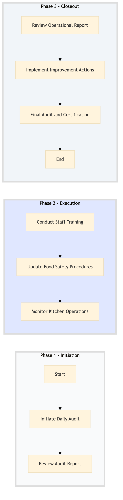

| Role | Steps |
|---|---|
| Executive Housekeeper | 1.1 2.2 3.2 |
| Food Safety Officer | 1.2 3.1 3.3 |
| Chef de Cuisine | 2.1 |
| Kitchen Manager | 2.3 3.2 |
| Step | Name | Role | System | Input | Output | KPI | Dec? | Exc? | Pain Point / Risk |
|---|---|---|---|---|---|---|---|---|---|
| 1.1 | Initiate Daily Audit | Executive Housekeeper | Oracle OPERA Cloud | Daily audit checklist | Audit report | Less than 30 minutes per audit | N | Y | Inconsistent adherence to HACCP protocols across different shifts |
| 1.2 | Review Audit Report | Food Safety Officer | Oracle OPERA Cloud | Audit report | Action plan | Less than 1 hour per review | Y | N | Delays in identifying critical issues that require immediate attention |
| 2.1 | Conduct Staff Training | Chef de Cuisine | Oracle OPERA Cloud, Book4Time | Training curriculum | Training records | Less than 2 hours per training session | N | Y | Low attendance or engagement during training sessions |
| 2.2 | Update Food Safety Procedures | Executive Housekeeper | Oracle OPERA Cloud, IDeaS G3 RMS | Feedback from staff and audit reports | Updated procedures document | Less than 1 hour per update | Y | N | Resistance to change in established food safety practices |
| 2.3 | Monitor Kitchen Operations | Kitchen Manager | Oracle OPERA Cloud, Knowcross HotSOS | Real-time kitchen data | Operational report | Less than 15 minutes per monitoring session | Y | Y | Difficulty in tracking and analyzing kitchen performance metrics |
| 3.1 | Review Operational Report | Food Safety Officer | Oracle OPERA Cloud, Microsoft Power BI | Operational report | Improvement plan | Less than 2 hours per review | Y | N | Lack of actionable insights from operational data |
| 3.2 | Implement Improvement Actions | Kitchen Manager, Executive Housekeeper | Oracle OPERA Cloud, Birchstreet Procurement | Improvement plan | Action confirmation | Less than 1 hour per implementation | N | Y | Resource allocation issues for implementing new safety measures |
| 3.3 | Final Audit and Certification | Food Safety Officer, Executive Housekeeper | Oracle OPERA Cloud | Final audit checklist | Certification document | Less than 1 hour per audit | Y | N | Non-compliance with HACCP standards despite corrective actions |
A structured process document for ensuring HACCP and food safety compliance in Marriott International full-service hotels. This process involves multiple roles across various systems to maintain high standards of kitchen operations.